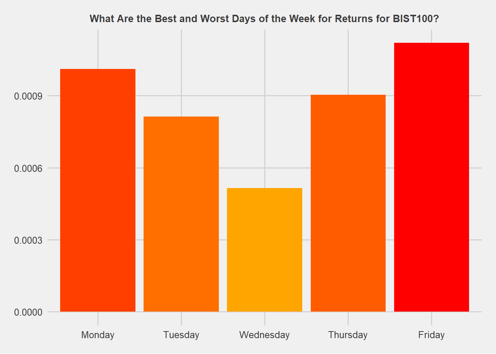

library(readxl)
library(lubridate)
library(dplyr)
library(ggplot2)
library(ggthemes)
library(scales)
library(ggrepel)Do stock returns differ depending on the day of the week? Let’s use BIST100 returns to try to determine whether there is a difference.
The data you can access by downloading the post1.xlsx file from here is from Reuters.
R
bist100 <- read_excel("data.xlsx")
bist100$DATE <- ymd(bist100$DATE)
#head(bist100)| DATE | CLOSE |
|---|---|
| 2002-12-31 | 103.6992 |
| 2003-01-02 | 105.9858 |
| 2003-01-03 | 108.3753 |
| 2003-01-06 | 103.5734 |
| 2003-01-07 | 97.5286 |
| 2003-01-08 | 101.6121 |
How to calculate rates of return:
bist100 <- bist100 %>%
mutate(
DAY = weekdays(DATE)
)
#head(bist100)| DATE | CLOSE | DAY |
|---|---|---|
| 2002-12-31 | 103.6992 | Tuesday |
| 2003-01-02 | 105.9858 | Thursday |
| 2003-01-03 | 108.3753 | Friday |
| 2003-01-06 | 103.5734 | Monday |
| 2003-01-07 | 97.5286 | Tuesday |
| 2003-01-08 | 101.6121 | Wednesday |
\[ r_i = \frac{P_{t+1}-P_t}{P_t} = \frac{P_{t+1}}{P_t} - 1 \]
\[ r_i = Return\ on\ a\ stock\ i \]
\[ P_t = Price\ of\ the\ stock\ at\ time\ t \]
\[ P_{t+1} = Price\ of\ the\ stock\ at\ time\ t+1 \]
bist100 <- bist100 %>%
mutate(
RETURN = lag(lead(CLOSE) / CLOSE - 1)
) %>%
na.omit()
#head(bist100)| DATE | CLOSE | DAY | RETURN |
|---|---|---|---|
| 2003-01-02 | 105.9858 | Thursday | 0.0220503 |
| 2003-01-03 | 108.3753 | Friday | 0.0225455 |
| 2003-01-06 | 103.5734 | Monday | -0.0443081 |
| 2003-01-07 | 97.5286 | Tuesday | -0.0583625 |
| 2003-01-08 | 101.6121 | Wednesday | 0.0418698 |
| 2003-01-09 | 102.2582 | Thursday | 0.0063585 |
The mean and standard deviation of returns based on weekdays:
result <- bist100 %>%
group_by(DAY) %>%
summarise(
r_mean = mean(RETURN),
r_sd = sd(RETURN)
) %>%
ungroup() %>%
mutate(
DAY = factor(
DAY,
levels = c(
"Monday",
"Tuesday",
"Wednesday",
"Thursday",
"Friday"
)
)
) %>%
arrange(DAY)
#result| DAY | r_mean | r_sd |
|---|---|---|
| Monday | 0.0010109 | 0.0198846 |
| Tuesday | 0.0008139 | 0.0164530 |
| Wednesday | 0.0005155 | 0.0155066 |
| Thursday | 0.0009036 | 0.0173621 |
| Friday | 0.0011200 | 0.0152668 |
Barplot (Average Returns):
ggplot(result, aes(x = DAY, y = r_mean, fill = r_mean)) +
geom_col() +
theme_fivethirtyeight() +
theme(
legend.position = "none",
plot.title = element_text(hjust = .5, size = 10)
) +
scale_fill_gradient(low = "orange", high = "red") +
scale_y_continuous(labels = comma) +
labs(
title = "What Are the Best and Worst Days of the Week for Returns for BIST100?"
)
Scatterplot (Average Returns vs Standard Deviations):
ggplot(result, aes(x = r_mean, y = r_sd)) +
geom_point(size = 5, alpha = .5) +
geom_text_repel(aes(label = DAY)) +
theme_fivethirtyeight() +
theme(
axis.title = element_text()
) +
scale_y_continuous(labels = comma) +
scale_x_continuous(labels = comma) +
labs(
x = "Average",
y = "Standard Deviation"
)Python
import pandas as pd
import seaborn as sns
import matplotlib.pyplot as plt
plt.style.use('fivethirtyeight')
bist100 = pd.read_excel("data.xlsx")
bist100.head() DATE CLOSE
0 2002-12-31 103.6992
1 2003-01-02 105.9858
2 2003-01-03 108.3753
3 2003-01-06 103.5734
4 2003-01-07 97.5286How to calculate rates of return:
bist100['DAY'] = bist100['DATE'].dt.day_name()
bist100.head() DATE CLOSE DAY
0 2002-12-31 103.6992 Tuesday
1 2003-01-02 105.9858 Thursday
2 2003-01-03 108.3753 Friday
3 2003-01-06 103.5734 Monday
4 2003-01-07 97.5286 Tuesday\[ r_i = \frac{P_{t+1}-P_t}{P_t} = \frac{P_{t+1}}{P_t} - 1 \]
\[ r_i = Return\ on\ a\ stock\ i \]
\[ P_t = Price\ of\ the\ stock\ at\ time\ t \]
\[ P_{t+1} = Price\ of\ the\ stock\ at\ time\ t+1 \]
bist100['RETURN'] = bist100['CLOSE'].pct_change()
bist100 = bist100.dropna()
bist100.head() DATE CLOSE DAY RETURN
1 2003-01-02 105.9858 Thursday 0.022050
2 2003-01-03 108.3753 Friday 0.022545
3 2003-01-06 103.5734 Monday -0.044308
4 2003-01-07 97.5286 Tuesday -0.058362
5 2003-01-08 101.6121 Wednesday 0.041870The mean and standard deviation of returns based on weekdays:
r_mean = bist100.groupby('DAY')['RETURN'].mean()
r_std = bist100.groupby('DAY')['RETURN'].std()
result = pd.DataFrame()
result['r_mean'] = r_mean
result['r_std'] = r_std
result.reset_index(inplace = True)
result['DAY'] = result['DAY'].astype("category")
day_list = [
'Monday',
'Tuesday',
'Wednesday',
'Thursday',
'Friday'
]
result['DAY'] = result['DAY'].cat.reorder_categories(day_list)
result['DAY']0 Friday
1 Monday
2 Thursday
3 Tuesday
4 Wednesday
Name: DAY, dtype: category
Categories (5, object): ['Monday', 'Tuesday', 'Wednesday', 'Thursday', 'Friday']Barplot (Average Returns):
fig = plt.figure(figsize = (10, 7))
bplt = sns.barplot(
x = 'DAY',
y = 'r_mean',
data = result,
palette = 'rocket'
)
bplt.set_title(
label = 'What Are the Best and Worst Days of the Week for Returns for BIST100?',
fontsize = 15
)
bplt.set_xlabel(xlabel = '')
bplt.set_ylabel(ylabel = '')
plt.show()Scatterplot (Average Returns vs Standard Deviations):
day = result['DAY']
r_mean_x = result['r_mean']
r_std_y = result['r_std']
fig = plt.figure(figsize = (10, 7))
splt = sns.scatterplot(
x = 'r_mean',
y = 'r_std',
data = result,
s = 150,
alpha = .5
)
for i, day in enumerate (day):
plt.annotate(
day, (r_mean_x[i], r_std_y[i])
)
splt.set_xlabel(xlabel = 'Average', size = 8)
splt.set_ylabel(ylabel = 'Standard Deviation', size = 8)
plt.show()